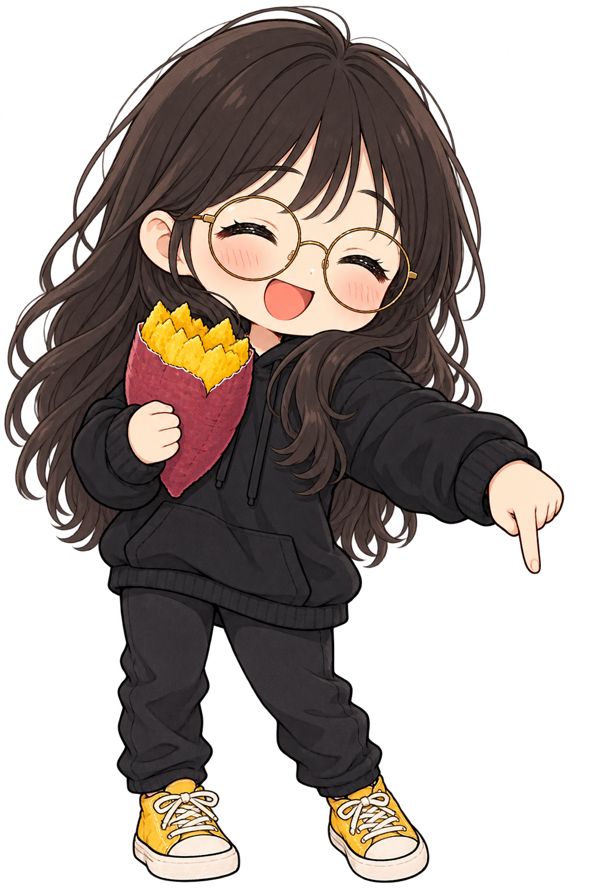
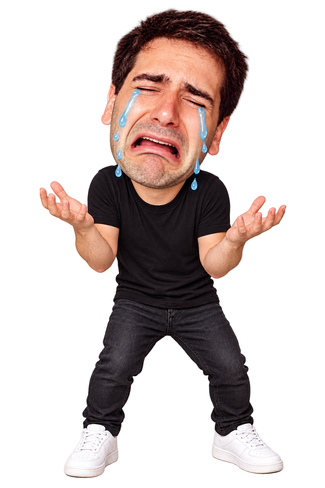

Can Tibo Capture Grok Bot?
0/ 5
♥♥♥
30

01 / 05


01 / 05
Five levels. Play as Tibo. Approach Grok Bot using arrows or WASD. Poteto presses Reset when Tibo is three walkable blocks away, making him cry before the next level. 30 seconds each. Avoid cactus traps and wait for gates. P pauses, R restarts, M mutes. Drag on the maze to move on touch screens.